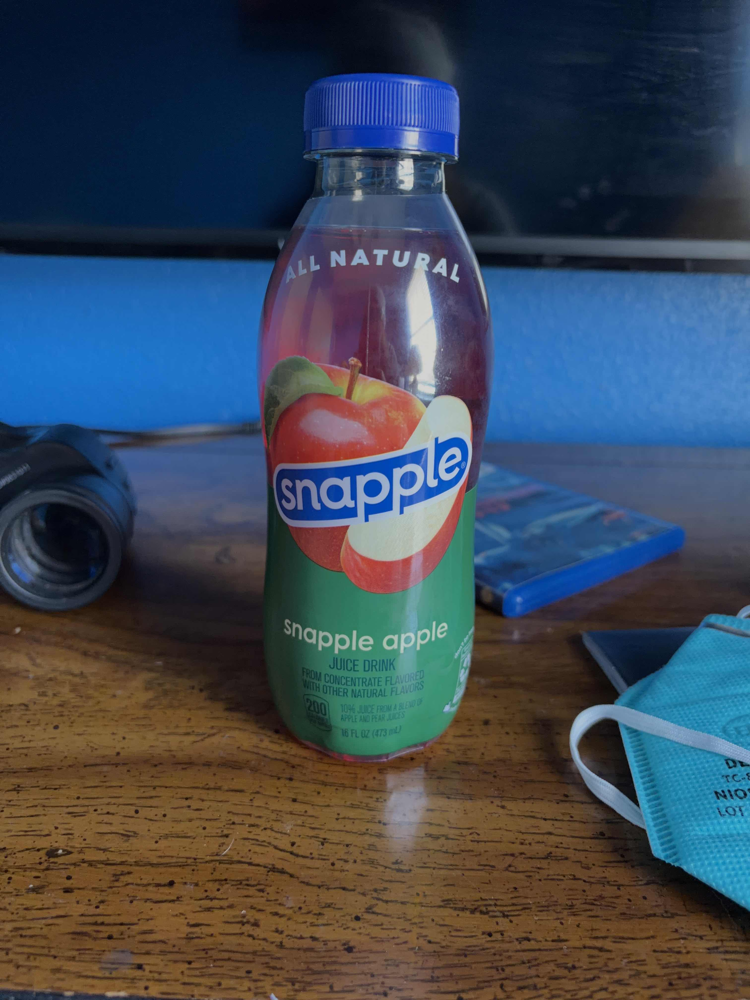

Smells like apple juice
And
Ok I love pears so this might just be me talking
But I'm taking a lot of whiffs
And there's maybe 3% pear
Like the tiniest sharp-but-mellow note
Blends with the strong strong apple
The apple is so strong
Time for the first sip
Never had Snapple in my life
Ok
The initial taste is extremely strong apple
Swirling it around my mouth some
It's a very tart apple
Just swallowed
It makes me salivate it's so strong
The aftertaste is purely apple
Second sip, a little less this time
There's supposedly pear in here
Pear is more mellow so I, like, cannot taste it below the apple
Full drink, full mouthful
I'm trying to hint out the pear
Okay
Okay
If you take a big drink then right after swallowing, before the apple aftertaste, you get hit with a lot of apple as it goes down your throat but there's a tiny bit of pear in there
It really is just mostly apple and citric acid
Unfortunately
Maybe the pear mellows out the apple but the pear just isn't there in the flavor profile
Will not be finishing
Okay it's been like 3 or 4 minutes and the laaaaate aftertaste is very light artificial sugary nothingness
You ever had a sweetart?
It's unpleasant

The bottle of snapple 🍸.